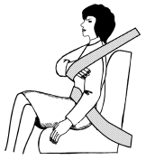

Классификация дорожно-транспортных происшествий и их причины.
Начинающий водитель никогда не предполагает, что дорожно-транспортное происшествие произойдет именно с ним. Конечно, если он соблюдает необходимые меры предосторожности при управлении автомобилем, не нарушает Правил дорожного движения, выполняя все указания дорожных знаков, то вероятность попасть в неприятную ситуацию невелика. Однако следует помнить, что на дороге вы не один, и другие водители могут быть не столь дисциплинированны. Поэтому, если вы действительно не хотите попадать в аварии, никогда не отвлекайтесь от дороги! Оставьте мелкие дела, которые, как вам кажется, можно сделать на ходу, до момента остановки у светофора или перед пересечением с главной дорогой, не ведите разговоров, если при движении они вас сильно отвлекают, и будьте внимательны, ибо внимательность – первейшее условие не только безопасной, но и правильной, умелой, грамотной езды.
Наблюдая за опытным водителем, трудно заметить его постоянную напряженность, автомобилем он управляет как бы между прочим. Газ убавляет до момента, когда пешеход, не заметивший его, оглянется; мимо велосипедиста на краю шоссе проезжает не тормозя, но можно заметить, как его правая нога немного нажала на тормозную педаль, чтобы при необходимости мгновенно затормозить. Вдруг он тормозит, когда дорога вроде пуста, однако тут же из-за деревьев показывается огромный рефрижератор. Можно только удивляться его прозорливости, шестому чувству.
На самом деле это не шестое чувство, а лишь опыт, предельная сосредоточенность и самоконтроль берегут его от опасности.
Обстоятельства, при которых возникают дорожно-транспортные происшествия, очень разнообразны, их анализ дает возможность выявить некоторые сходные черты, что, в свою очередь, дало возможность разработать классификацию происшествий для изучения причин их возникновения и разработки мероприятий по их предупреждению.
Под дорожно-транспортным происшествием понимается событие, возникшее в процессе движения по дороге транспортного средства и с его участием, при котором погибли или ранены люди, повреждены транспортные средства, груз, сооружения.
Таким образом, для дорожно-транспортного происшествия характерны следующие обстоятельства: в происшествии принимает участие хотя бы одно транспортное средство (любые трагические события на дороге без участия транспортных средств к дорожно-транспортным происшествиям не относятся); транспортное средство, участвовавшее в происшествии должно обязательно находиться в движении (например, автомобиль загорелся во время проведения ремонтных работ на стоянке, это событие к дорожно-транспортным происшествиям не относится); в результате происшествия произошла гибель или ранение людей либо нанесен материальных ущерб. Например, если на загородной дороге водитель превысил скорость, не справился с управлением и автомобиль вышел за пределы дороги, не получив при этом повреждений, такое событие является следствием нарушения Правил дорожного движения, за что водитель должен быть наказан, но оно не относится к дорожно-транспортным происшествиям, так как транспортное средство, участвовавшее в происшествии, обязательно должно находиться в движении.
Все дорожно-транспортные происшествия подразделяются на несколько видов.
Столкновение– происшествие, при котором движущиеся транспортные средства столкнулись между собой или с подвижным составом железных дорог. К столкновению относится и наезд на внезапно остановившееся транспортное средство, например, перед светофором или из-за технической неисправности.
Опрокидывание– происшествие, при котором движущееся транспортное средство опрокинулось.
Наезд на стоящее транспортное средство– происшествие, при котором движущееся транспортное средство наехало на стоящее транспортное средство (кроме внезапно остановившегося), а также на прицеп или полуприцеп.
Наезд на препятствие– происшествие, при котором движущееся транспортное средство наехало или ударилось о неподвижный предмет.
Наезд на пешехода– происшествие, при котором транспортное средство наехало на человека или он сам натолкнулся на движущееся транспортное средство, или пешеход пострадал от перевозимого транспортным средством груза.
Наезд на велосипедиста– происшествие, при котором транспортное средство наехало на велосипедиста или он сам натолкнулся на движущееся транспортное средство.
Наезд на гужевой транспорт– происшествие, при котором транспортное средство наехало на упряжных животных, а также на повозки, транспортируемые этими животными, либо упряжные животные или повозки, транспортируемые этими животными, ударились о движущееся транспортное средство.
Наезд на животных– происшествие, при котором транспортное средство наехало на птиц, диких или домашних животных либо сами эти животные или птицы ударились о движущееся транспортное средство, в результате чего пострадали люди или причинен материальный ущерб.
Падение пассажира– происшествие, при котором произошло падение пассажира из движущегося транспортного средства или из салона (кузова) движущегося транспортного средства в результате резкого изменения скорости или траектории движения. Падение пассажира из недвижущегося транспортного средства, например при посадке или высадке, не является дорожно-транспортным происшествием.
Прочие происшествия– происшествия, не относящиеся к перечисленным выше видам, такие как падение перевозимого груза на человека или на другое транспортное средство, наезд на внезапно появившееся препятствие (упавший груз, отделившееся колесо) и другие происшествия, связанные с движущимся транспортным средством и вызвавшие указанные в определении ДТП последствия.
Внутри каждого из видов дорожно-транспортных происшествий могут быть выделены несколько групп. Например, столкновение может быть встречным и попутным. В свою очередь попутное столкновение может быть столкновением двух транспортных средств или цепным. Несмотря на то, что цепное столкновение происходит при относительно меньших скоростях, чем встречное, ущерб от них достигает большой величины за счет участия нескольких транспортных средств. Так, одна из катастроф началась со столкновения двух автомобилей, двигавшихся на большой скорости, на которые, не успев затормозить, наезжали другие. В результате столкнулись около 200 легковых и 30 грузовых автомобилей. Участники аварии заняли участок дороги более 2 км. Два человека погибли, шесть тяжело ранены, десятки получили легкие травмы. Одна из наиболее распространенных причин подобных столкновений заключается в том, что водители часто не выдерживают дистанцию до идущего впереди автомобиля, которая не соответствует скорости движения. В таких условиях даже экстренное торможение не позволяет избежать столкновения.
Особую опасность представляют встречные столкновения транспортных средств. Последствия таких столкновений очень тяжелы: разбитые или уничтоженные автомобили, погибшие люди, тяжелые ранения. Огромная энергия, которой обладают мчащиеся навстречу друг другу автомобили, за несколько сотых долей секунды превращается в энергию уничтожения. Встречные столкновения чаще всего являются следствием нарушения Правил дорожного движения. Поэтому снижать тяжесть последствий встречных столкновений следует совершенствованием пассивной безопасности, а именно: садясь за руль автомобиля, обязательно пристегивать ремень безопасности. К сожалению многие начинающие водители не пользуются ремнями безопасности, которые являются эффективным средством пассивной безопасности.
Ремень безопасности является шансом начинающего водителя не пострадать в аварии. Он предохранит от выпадения из автомобиля, при этом вероятность остаться в живых возрастают примерно в пять раз; замедлит поступательное движение тела вместе с автомобилем. Если автомобиль резко остановится, вы будете продолжать двигаться с той же скоростью до тех пор, пока не ударитесь о приборный щиток или ветровое стекло. При скорости 50 км/ч удар по силе будет равен падению с крыши трехэтажного дома. Ремень безопасности не позволит вам перемещаться вдоль сиденья при неожиданных остановках и поворотах, а значит, даст возможность управлять автомобилем. При боковом столкновении водителя может отбросить к противоположной дверце, ремень удержит вас за рулем. У человека, выброшенного из автомобиля, вероятность погибнуть в 40–50 раз выше, чем у оставшегося в машине.

Рис. 29. Регулировка ремня безопасности
Чтобы ремень эффективно выполнял функцию безопасности, его следует отрегулировать: кисть руки должна туго входить под него на уровне груди (рис. 29). Подголовник устанавливают так, чтобы он препятствовал движению головы назад и в его среднюю часть упирался затылок.
В настоящее время во многих странах применение ремней безопасности является обязательным. Пренебрежение грозит крупным штрафом, а водитель, не пристегнувшийся ремнем, в случае аварии не получает страховки. В других государствах использование ремней безопасности увеличивает сумму страховки на 25 %. В Швейцарии закон о ремнях безопасности был принят в 1976 году, после референдума, на котором сторонники получили преимущество над своими противниками всего в 0,8 %. Однако благодаря закону число тяжелых травм в результате дорожно-транспортных происшествий снизилось в 5 раз, а легких – в 3 раза.
В Японии подсчитали, что применение ремней безопасности помогает избежать гибели в 75 случаях из 100. В США ремни безопасности помогают избежать смерти при столкновении в 77 случаях из 100, а при опрокидовании – в 91 случае. В Швеции, где проживает 8,3 млн. человек, за год в дорожно-транспортных происшествиях гибнет 640 человек. В той же Швеции на 1 млн. жителей приходится 76 погибших в авариях, в Литве – 235. Литовцы не ездят хуже шведов. Просто в Швеции пристегиваются ремнями безопасности 83 % водителей, а в Литве – 30 %. В России по некоторым подсчетам пока, к огромному сожалению, пристегиваются всего 2 водителя из 31.
Сейчас в западных странах производится все больше автомобилей, которые или сигнализируют перед началом поездки, что водитель не пристегнулся, или отказываются заводиться, пока сидящий за рулем не воспользуется ремнем безопасности. Такие автомобили появились и на улицах российских городов.
Специалисты установили развитие событий, когда водитель на скорости 80 км/ч совершает наезд на какое-либо препятствие.
Спустя 0,026 с после удара вдавливается бампер; сила, в тридцать раз превышающая силу тяжести автомобиля, останавливает его движение на линии передних сидений, тогда как его пассажиры – если они не пристегнуты ремнями безопасности – продолжают двигаться в салоне автомобиля со скоростью 80 км/ч. Спустя 0,039 с водитель вместе с сиденьем стремительно движется вперед на 15 см; через 0,044 с он грудной клеткой ломает руль; спустя 0,050 с скорость падает настолько, что на автомобиль и на всех пассажиров начинает действовать сила, в 80 раз превышающая их собственную силу тяжести; спустя 0,068 с водитель с силой 9 т ударяется о приборный щиток; спустя 0,092 с водитель и сидящий рядом с ним пассажир одновременно врезаются головами в лобовое стекло и получают смертельные повреждения черепа; спустя 0,100 с повисший на руле водитель отбрасывается назад, он уже мертв; спустя 0,110 с автомобиль начинает слегка откатываться назад; спустя 0,113 с сидящий за водителем пассажир – если он также не пристегнут ремнем безопасности, оказывается с ним на одной линии и наносит ему новый удар и одновременно сам получает смертельные повреждения; на 0,150 с наступает полная тишина; осколки стекла и обломки железа падают на землю.
Все окончено менее чем за две десятых доли секунды!
При столкновении на скорости 80 км/ч выделяется колоссальная энергия, достаточная для того, чтобы подбросить легковой автомобиль, который в среднем имеет массу 1 т, на высоту почти 30 м, то есть выше семиэтажного дома.
Начинающий водитель должен обязательно пристегивать ремень безопасности и, сознавая чрезвычайную опасность встречного столкновения, принимать все меры к том, чтобы избежать его. Однако в этом случае многое зависит от механизма дорожно-транспортного происшествия и конкретной ситуации.